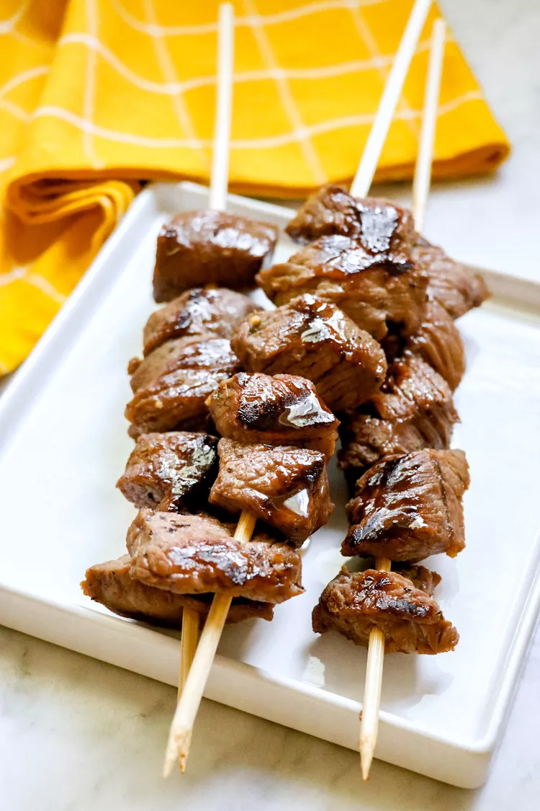

Home
Sweet Grilled Steak Bites
Allrecipes.com

Description
This recipe for grilled steak bites has a slightly sweet flavor that is not overpowering, but enough for people to know it's not an ordinary steak! Marinated cubes of steak or roast are grilled over an open flame, kabob-style.
Ingredients
- 2 pounds cubed beef stew meat
- ½ teaspoon Greek seasoning, or to taste
- ⅓ cup dark corn syrup
- ¼ cup soy sauce
- 1 teaspoon minced garlic
- ½ teaspoon seasoned salt
Steps
- Season meat with Greek seasoning. Combine corn syrup, soy sauce, garlic, and seasoned salt in a large resealable bag or nonreactive bowl. Massage the bag to blend, then add beef. Press out most of the air and seal. Marinate for up to 24 hours, flipping over occasionally to evenly marinate.
- Preheat a grill for medium heat. When hot, lightly oil the grate. Thread the beef cubes onto skewers.
- Grill meat on the preheated grill, turning occasionally, until they have reached your desired degree of doneness.